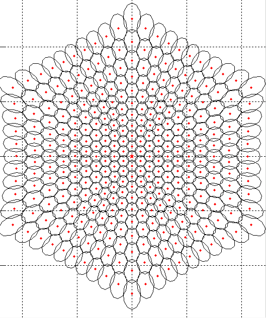
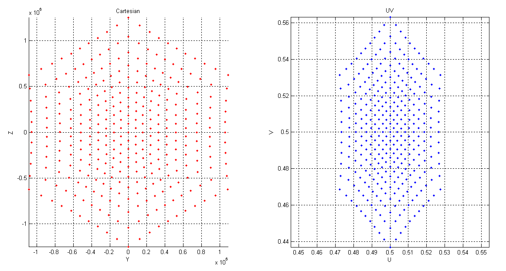

卫星位置
类似 Walker 的生成方法：高度与倾角确定轨道，轨道面朝向、每轨星数和相位确定各星位置。
进入这一部分 →由轨道面、每轨星数、倾角与相位构造类似 Walker 的参考星座，再建立每星波束和 UE 链路。第二大步按覆盖范围、3 dB 宽度、整数束数与六角覆盖展开，第三大步选择 UE 统计区域。
先用轨道参数给出卫星快照，再安排每星波束中心与指向，最后选择 UE、资源和干扰链路。
类似 Walker 的生成方法：高度与倾角确定轨道，轨道面朝向、每轨星数和相位确定各星位置。
进入这一部分 →由最低服务仰角定整星覆盖尺度与同轨星数；结合 HPBW 和整数层数定束数，再说明六角覆盖与附录归一化经纬坐标（原文 UV）。
进入这一部分 →区域与分区的衔接说明 ↓内部或外围波束可选作 UE 统计子集；统计区、单星设计覆盖与同频活动干扰集合分别确定。
进入这一部分 →模块 01 / 02 / 03 对应总览中的三个问题；阅读步号按本方案的输入依赖排列。前一步的输出，交给后一步继续计算。
原文给出高度、倾角、轨道面数与每轨星数。完整初相位和轨间相位尚未唯一写定；本页快照采用明确的教学设定。
最低仰角确定整星覆盖尺度；单束宽度与整数层数确定束数。近似六角覆盖、实际足迹和归一化经纬坐标表示依次说明。
内部 19 束是可选的 UE 统计子集；整星覆盖、统计样本与同频活动干扰集合分别指定，再对每个 UE 累加功率。
最低仰角与高度 → 单星覆盖 / 同轨星数 → HPBW 与整数束数 → 六角覆盖与归一化经纬表示
| 覆盖设计 | 最低服务仰角决定整星设计覆盖尺度，并与参考星座的同轨星数衔接。 |
|---|---|
| 波束设计 | 给定方向图得到 3 dB 宽度，再结合覆盖尺度确定层数，按整数约束调整宽度、直径和口径。 |
| 六角与 UV | 原文采用近似六角覆盖；附录 UV 是经纬归一化的中心表示，原文未给出完整的方向余弦 UV 等间距排束算法。 |
| 统计区域 | 内部或外围部分波束可用于 UE 统计；中心 19 束不是整星服务区的固定定义。 |
UE 撒点 → 服务关联 → 活动与资源 → 干扰源筛选 → 逐链路功率 → 分组统计
统计哪些 UE，与保留哪些干扰源分别确定。
| UE 撒点与统计集合 | 原稿给出低纬区域、每束最多 10 UE，允许只评估部分波束。本页提供一束 / 中心 19 束等示例。 |
|---|---|
| 关联与活动资源 | 明确 UE 所属服务星和服务束；另外指定点亮、同频、时频重叠、极化及功率。 |
| 干扰源集合 | 对同一个 UE 枚举完整候选模板；统计 UE 的范围不直接裁剪其他卫星的干扰束。 |
| 功率与分布 | 逐链路计算距离、离轴角、增益和损耗，再求 SIR / SINR。当前交互列出几何与候选；接入功率模型后再生成 CDF。 |
依据：R1-1906870 · §2–4 / Tables 3–7、11；原稿设定与页面示例在对应步骤分别标注。
全部轨道面与卫星组成一张共同的三维快照。
每颗卫星各有一组波束，逐束确定指向。
本页枚举逐束几何；接入功率模型后计算 Cᵤ、Iᵤ 与分布。
将原图与上方教学网格对照：红点是中心，轮廓是足迹；中心坐标与覆盖形状是两层信息。


cₛ,ᵦ 在球面上 → 从卫星 sₛ 指向该点 → 得到波束轴 qₛ,ᵦ。
局部模板 qᵦ → 姿态矩阵 Aₛ 旋转 → 与地球求交得到波位 cₛ,ᵦ。
两种表述需要一致的三维变换。随星移动或指向固定地面波位，还需要明确时间更新规则；6870 没有完整写定。
| 环节 | ZTE 原文给出 | 本页采用 / 完整评估需补充 |
|---|---|---|
| 星座快照 | 高度、86.4°倾角、轨道面数与每轨星数。 | 本页沿轨均分、邻轨半格错位。完整评估需固定轨间相位、参考时刻及地球自转处理。 |
| 波束规划 | 束数、直径与口径；六角布局近似；37 个示例波位坐标。 | 本页完整网格采用地面间距构造。完整评估需确定全部中心、载荷姿态、指向更新及方向图。 |
| UE 与关联 | 低纬区域、每束最多 10 UE；允许选部分波束仿真。 | 本页选一束 / 中心 19 束，关联到撒点时所属波束。完整评估需明确服务仰角、选星选束及样本权重。 |
| 同星 / 异星干扰 | 支持单星或多星评估；未完整写定部分束选择后的干扰处理。 | 本页保留完整候选模板、所选频组全开；三频标签是教学映射。完整评估需明确跨星频率协调、点亮、资源重叠、极化与功率。 |
当前网页的计算范围：卫星与地面几何、UE 样本、逐束 d / El / θ、候选干扰计数。接收功率和噪声模型尚未接入，候选数量不能解读成 CIR / SINR 或 CDF 结果。
另一个独立用例：原文 Table 9 的下行同步链路级仿真把干扰束数设为 0；这不等于系统级多星评估忽略干扰。
R1-1906870 §2、Tables 4 / 6：600 km 为 16 面 × 每面 28 星，1200 km 为 10 面 × 每面 16 星；倾角 86.4°。S 波段每星波束：Set-1 为 397 / 331，Set-2 为 37 / 61，分别对应 600 / 1200 km。Tables 3 / 5 的波束直径用于本页布局尺度。
沿用同高度圆轨道、沿轨均分、轨道面朝向在 180°内均分、邻轨半格错位的示例。完整波束布局按给定束数生成六角中心网格，再映射到球面并记录归一化经纬坐标；本页为演示采用星下点附近地面等间距构造，未将它作为原文完整束中心坐标。单星局部网格随卫星星下方向旋转，不含地球自转。
第二步可单独查看原文 Table 11 的全部 37 个已列点，编号 B0–B36。表只列出部分坐标，不代表 LEO1200 Set-1 的总束数只有 37。附录 UV 是经纬归一化坐标：U = 0.5 + 经度/(2π)，V = 0.5 − 纬度/π；与方向余弦坐标分开使用。本页逆映射采用完整球面公式，包含纬度余弦因子。
Table 7 给出 LEO 低纬区域，经纬度均在 −20°到 +20°之间，建议每束最多 10 个 UE。本页在选定参考星的被评估六角服务区域中，按球面面积均匀撒点，并裁剪到该区域。可以只评估一个波束，或中心与前两圈 19 束的教学子集；其余卫星仍保留完整波束用于干扰候选计算。
第三步的链路表给出真实几何计算值。FRF=3 的频率标签是教学映射；同频全开用于理解求和。接收功率还需填入天线方向图、发射功率及传播模型，本页不将候选束数当作干扰功率。原文没有完整规定关联、跨星频率和活动资源，完整平台需另行补充。Table 9 的零干扰只属于同步链路级用例。
给定高度 h，卫星星下点 P 到设计边界 UE 的大圆距离由最低服务仰角决定。取 Rₑ=6371 km、εmin=30°，半覆盖地心角为 α=acos[Rₑcosεmin/(Rₑ+h)]−εmin。
Ns 的表达式采用原文 §2 的六角覆盖几何。最低仰角给出空间尺度，再结合覆盖几何确定同轨星数；Tables 4 / 6 的 LEO600 为 28 星 / 面，LEO1200 为 16 星 / 面。完成星数取整后，原文继续回算覆盖参数，并与波束层数、宽度共同调整。
依据：R1-1906870 §2–3、Figures 1–3、Tables 3–6 / 11 与 Appendix。
半功率波束宽度（Half-Power Beamwidth，HPBW）是主瓣峰值两侧下降 3 dB 的两个方向之间的全角宽度。给定方向图后得到 HPBW；3 dB 本身不指定一个固定的角度数值。
中心外 n 圈时，六角完整层数的束数为 Nbeam=1+3n(n+1)。下表读取原文最终结果；层数列按该计数式换算。
| 场景 | 束数 / 星 | 层数（含中心） | 直径参数 | 等效口径 |
|---|---|---|---|---|
| 600 km · Set-1 | 397 | 12：中心 + 11 圈 | 66 km | 1.67 m |
| 1200 km · Set-1 | 331 | 11：中心 + 10 圈 | 149 km | 1.5 m |
| 600 km · Set-2 | 37 | 4：中心 + 3 圈 | 175.4 km | 0.67 m |
| 1200 km · Set-2 | 61 | 5：中心 + 4 圈 | 242.6 km | 0.9 m |
依据：R1-1906870 §2–3、Figures 1–3、Tables 3–6 / 11 与 Appendix。
下一小步拿掉轮廓，只看原文列出的中心位置；再下一小步才引入归一化经纬坐标。
依据：R1-1906870 Figures 1–3、Appendix 与 Table 11；局部 7 束图为概念示意。
原文 Table 11 列出 B0–B36，共 37 个起始中心。这里将表中坐标恢复到球面，显示这些中心的地面 Y/Z 投影；本例 B0 对应参考星下点，其经纬度为 (0°,0°)。
高亮点只代表一条波束的目标中心。37 是本表已列中心的数量；每星总束数仍按 2.2 的场景参数读取。
点击“跟踪 B1”，再进入“③ 归一化经纬坐标”，可持续观察同一个编号。
依据：R1-1906870 Figures 1–3、Appendix 与 Table 11；局部 7 束图为概念示意。
6870 附录用 U、V 编码地面波位中心的经度 λ、纬度 φ。本页采用角度制表达：
参考星位于正 X 轴上，星下点 B0 的经纬度为 (0°,0°)，因此 U=V=0.5。这里的 0.5 来自经纬坐标的平移与归一化，与半功率、3 dB 没有关系。若在同一全球经纬坐标系中换一个星下位置，其 U、V 也会变化。
| 对比 | 本页：归一化经纬坐标（原文 U,V） | 方向余弦波束平面（u,v） |
|---|---|---|
| 每个点表示 | 一个地面中心的经纬位置。 | 从卫星出发的单位方向。 |
| 定义 | U=0.5+λ/360° V=0.5−φ/180° | u=sinθcosψ v=sinθsinψ θ 是相对星下方向的角度。 |
| 星下参考值 | 本例零经纬星下点为 (0.5,0.5)。 | 以星下方向为局部法向时，星下方向为 (0,0)。 |
| 固定一个偏离星下点的地面中心 | 地理坐标系固定时，经纬位置不随卫星高度改变。 | 卫星高度、位置或局部姿态改变时，相应方向坐标可改变。 |
二者通过星地几何联系：归一化经纬 U、V → 地面三维位置 → 从卫星到该点的单位方向 → 方向余弦 u、v。方向余弦平面的波束半径或间距公式，需要在相应的方向坐标定义下使用。
Table 11 中沿零经度向北的几个中心，纬度间隔已经不同：
| 中心 | U | V | 纬度 | 与前一点的纬度间隔 |
|---|---|---|---|---|
| B0 | 0.500000 | 0.500000 | 0° | — |
| B3 | 0.500000 | 0.495442 | 0.82044° | 0.82044° |
| B11 | 0.500000 | 0.490816 | 1.65312° | 0.83268° |
| B25 | 0.500000 | 0.486046 | 2.51172° | 0.85860° |
本图记录原文已给定中心的位置。等经纬度间隔、等地面距离和等卫星视角是不同的排布条件；仅凭坐标名 UV，不能指定其中一种生成规则。
原文采用六角覆盖近似，没有写全全部中心的唯一生成算法。本图使用 Table 11 已列的 37 个中心；后续 UE 撒点使用的完整地面网格属于补充演示实现。
已知中心后再进行坐标转换。先求 λ=2π(U−0.5)、φ=π(0.5−V)，得到 c=Rₑ(cosφcosλ,cosφsinλ,sinφ)，然后 q=(c−s)/‖c−s‖。
Table 11 的 B1=(0.501974,0.502279)，对应 c≈(6370.347,79.016,−45.614) km。参考星 s=(7571,0,0) km 时，斜距约 1204.115 km，波束轴偏离星下方向约 4.3455°。这是已知布局后的几何换算。
| 范围 | 怎样确定 | 在评估中的作用 |
|---|---|---|
| 单星设计覆盖 | 由高度与 UE 最低服务仰角确定。 | 提供整颗星需要覆盖的设计尺度。 |
| 各束实际覆盖 | 由中心、方向图、斜距和球面投影形成；3 dB 轮廓可重叠。 | 全部服务束共同提供覆盖；UE 的实际服务关联还需指定增益与资源规则。 |
| 仿真统计区域 | 选择在哪些内部或外围波束内撒 UE、统计结果。 | 中心 19 束可以是统计子集，不是整星服务区的固定定义。 |
例如 1200 km、Set-2 每星 61 束，可以只选中心 19 束内的 UE 做统计；其余束是否点亮、哪些束同频参与干扰，应另行指定。6870 允许选择内圈或外圈部分波束评估，没有固定要求统计内部 19 束。
依据：R1-1906870 Appendix、Table 11 与 Figures 1–3。